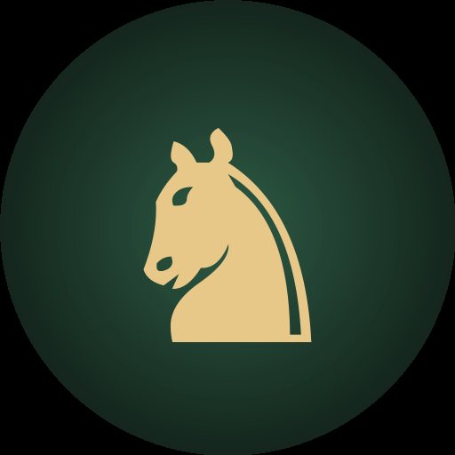
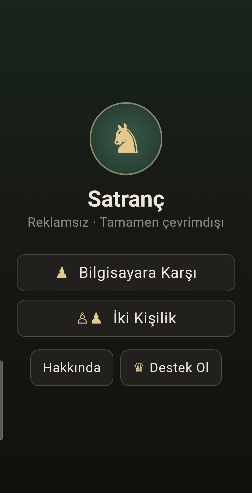
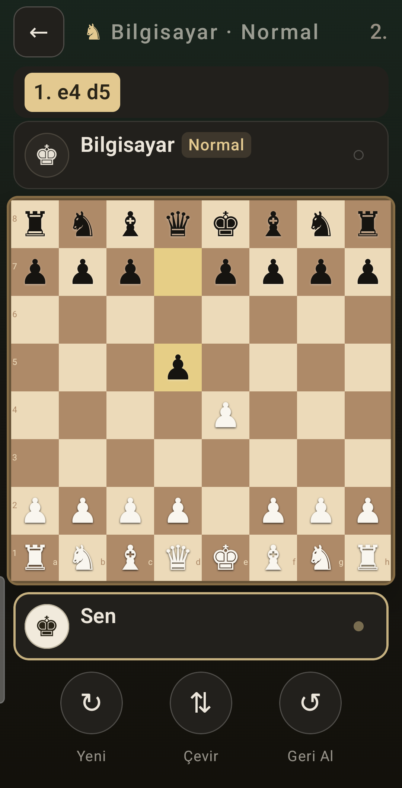
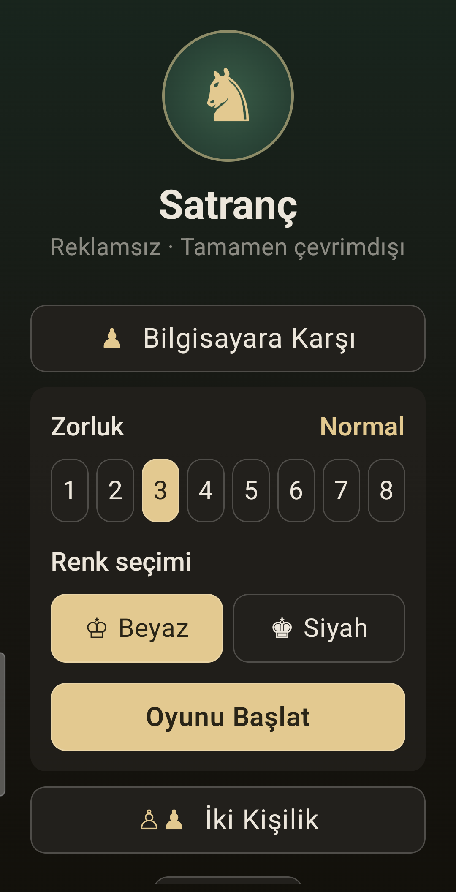
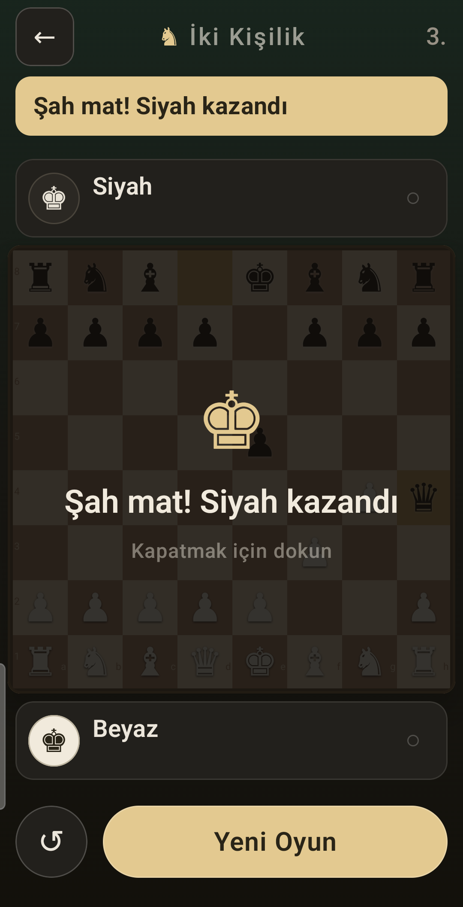
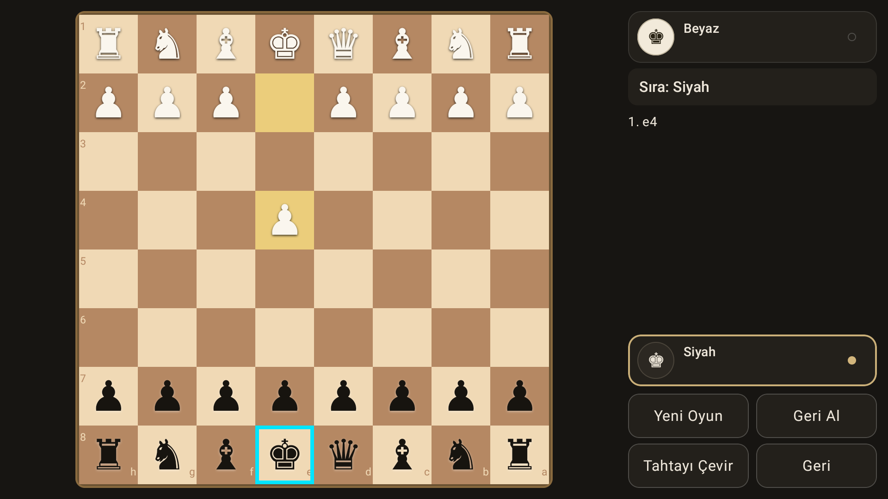

Reklamsız, takipsiz, tamamen çevrimdışı satranç.
Telefon, tablet ve Android TV.





Stockfish 17.1, 8 zorluk seviyesi. Alt seviyelerde arama derinliği kasıtlı olarak sınırlı — motor gerçekten hata yapar, yenilebilir.
Aynı cihazda karşılıklı oyun. TV'de tahta sırası gelen oyuncuya döner ve imleç onun tarafına atlar; telefon ve tablette tahta sabit kalır.
Telefonda tahta ve kontroller alta yaslanır, kontroller başparmak menzilindeki yuvarlak yuvada durur.
Alınan taşlar ve materyal farkı, SAN hamle listesi, geri alma, tahta çevirme, terfi seçimi, şah/mat/pat/beraberlik tespiti.
Hesap yok, veri toplanmıyor, oyununa dair hiçbir şey cihazdan çıkmıyor. Yapay zekâ rakip tamamen cihazında çalışır.
Manifest'te INTERNET izni görünür; tek sebebi
isteğe bağlı destek ekranının Google Play faturalandırmasını kullanmasıdır.
Oyunun kendisi hiçbir bağlantı açmaz — ve bunu iddia etmiyoruz, kaynak kod
herkese açık, kendiniz bakabilirsiniz.